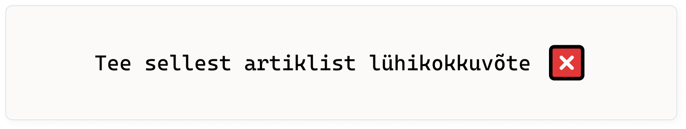
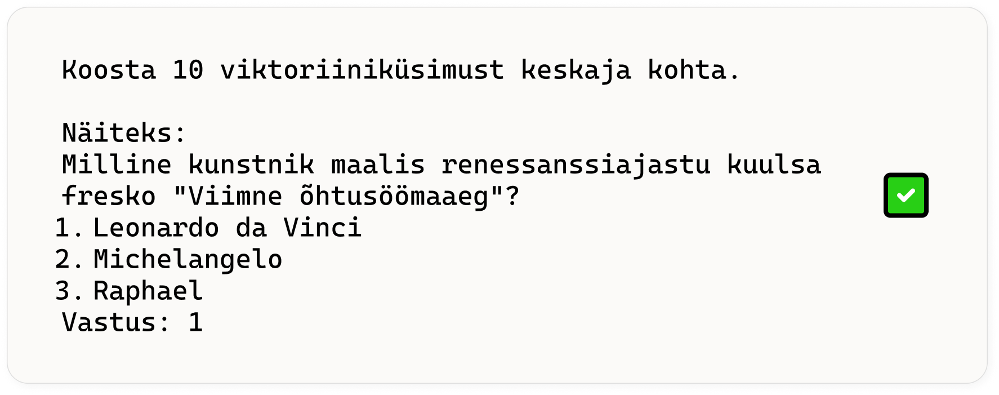
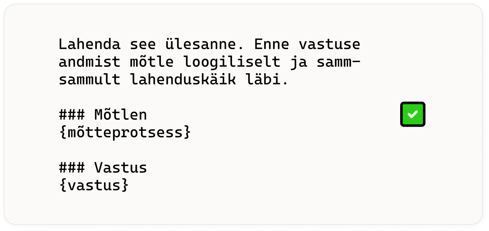
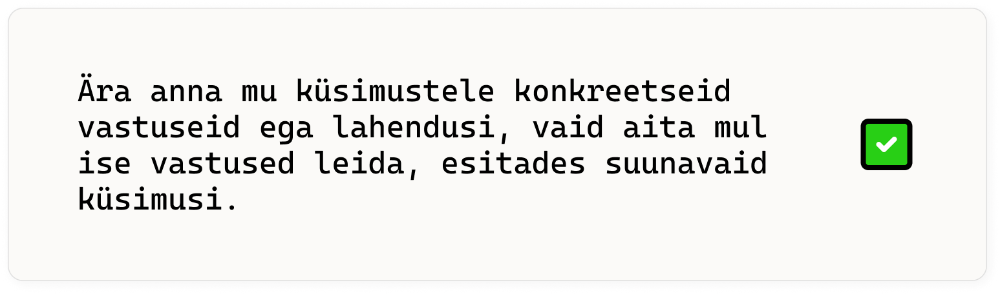
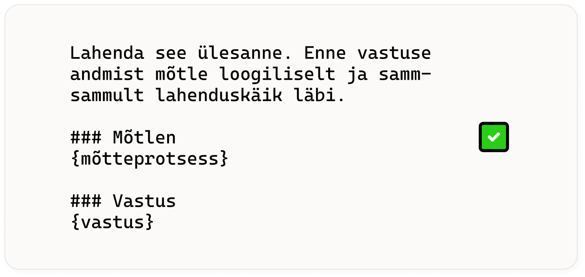
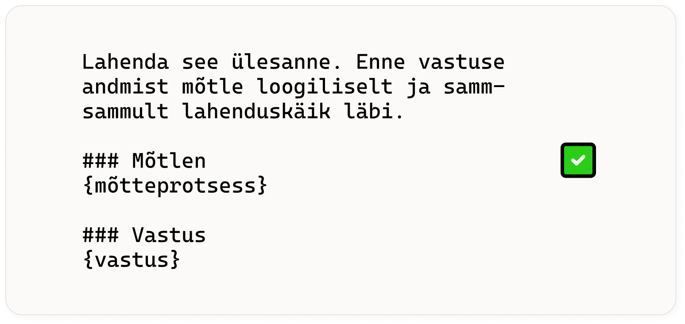
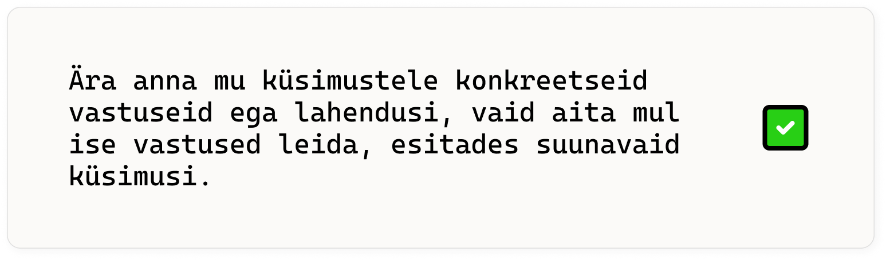
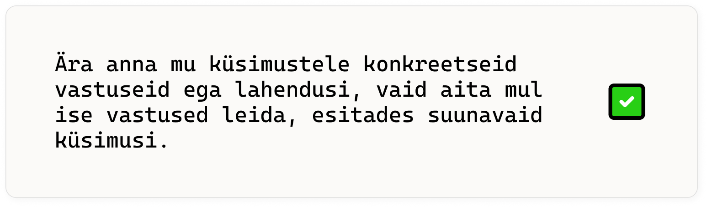

Imiteerib inimintelligentsi, 'petab' meid hästi ära
Kratt
Teeb paljud automaatsed aeganõudvad korduvad tüütud ülesanded ära
Tekitab probleeme kui tähelepanuta jätta
Omadused
24/7 ligipääs infole ja seletustele
Ülimalt suur arvutusvõimsus
Personaliseeritud, rätseplahendus just sulle
Võimalused
Mustandite genereerimine
'Kuivade' dokumentide kokkuvõte
Aitab mõtlemist lihvida - pakub alternatiive ja vastuargumente
Lahendus 'tühja lehe' probleemile
Uute teemade õppimine
Kuidas uusi asju õppida?
Uus teema = tundmatu paik
Õppimine = avastamine ja kaardistamine
Füüsikaõpetaja kaardid füüsikast vs minu kaardid füüsikast
Keelemudel tutvustab meile ümbrust ja aitab kaardistada
Parimad praktikad
Ole detailne ja spetsiifiline
Väldi ebamääraseid sõnu nagu 'mõni', 'väga palju', 'suhteliselt' jne

Eralda ja struktureeri
Suuna läbi näidete
few-shot prompting

Anna infot kus sa oled, mida sa tead, miks ja kuhu minna tahad
Lase keelemudelil 'mõelda'
chain of thought

Määra roll või stiil

Aktiivne õppimine läbi vestluse
VS
Ohukohad ja limitatsioonid
Limitatsioonid - mida keelemudel ei ole
Lack Understanding: They do not possess awareness or
understanding of what they say; they can’t form beliefs,
intentions, or experiences.
Are not Conscious: They don’t have self-awareness or subjective
experiences.
Don’t Reason Like Humans: They simulate reasoning by generating
outputs that match the forms of human logic they’ve been trained
on but don’t engage in real deductive or inferential reasoning.


 

 
